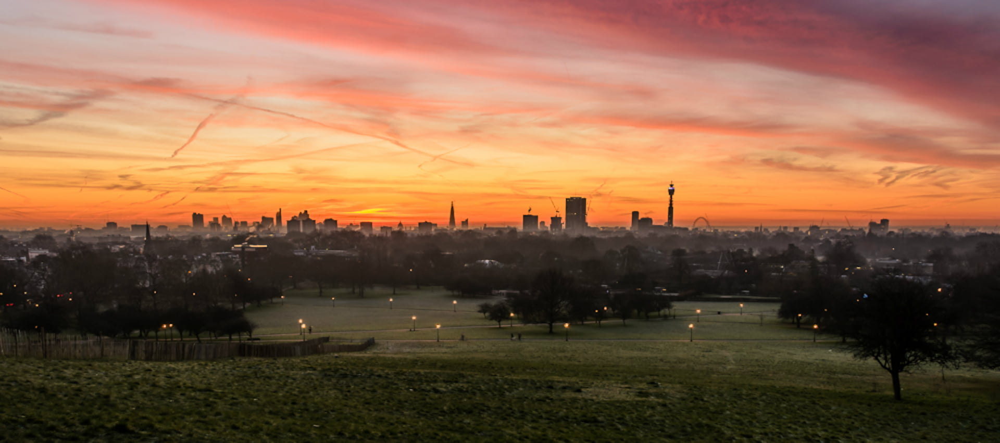
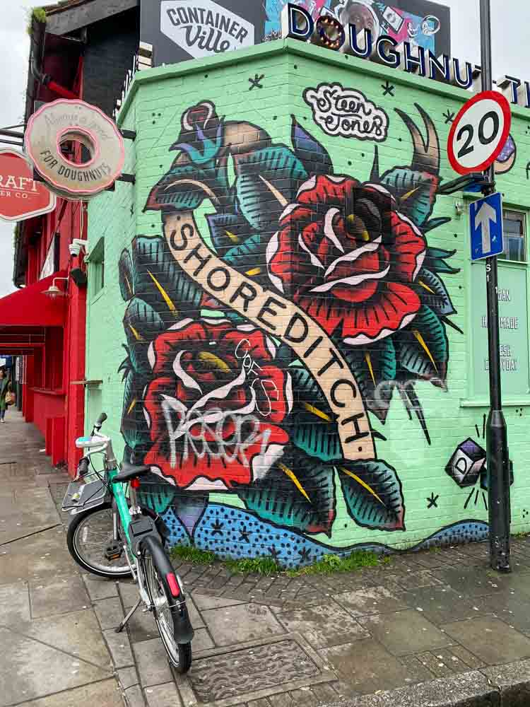
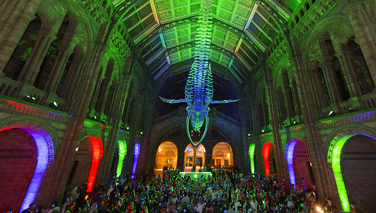

Londra'da her turistin gördüklerinden çok daha fazlası var. Şehrin yerlileri Exhibition Road'u turlamaktan, Camden'de sokak lezzetlerini tatmaktan başka neler yapıyorlar bir Londoner'dan öğrenelim:
Gerçek bir yerlinin hafta sonunda yaptığını yapmak istiyorsanız şehrin en sade ancak en güzel alanlarından birinde pikniğe gitmelisiniz.
İngilizler gerçek bir pazar kahvaltısına bayılırlar, özellikle kendi muhitlerinde bulabilecekleri en lezzetlisine! Dalston, şehirde pazar gününü geçirmek için birçok özelliğe sahip. Dalston'daki publar ise şehrin en iyi roastlarını yapıyor.
1912'de açılan Phoenix Cinema şehrin en eskilerinden biri. Tek salonda bağımsız filmlerden art-house filmlere çok özel seçkiler sergileniyor.
Londra'da Shoreditch'in sıranın en başında yer aldığı sokak sanatlarıyla ünlü birkaç semti bulunuyor. Sokaklarda sadece yürümeniz bile görsel kütüphanenizi dolduracak, sizi duvarlara hayran bırakacak.
Shoreditch'te sokak turuna çıkmak isterseniz, Shoreditch Street Art Tours'a ulaşabilir ve detaylı bilgiyi alabilirsiniz:
1797'de açılan Hatchard, tüm İngiletere'nin en eski kitapçısı. Aynı zamanda kraliyet ailesinin de kitap tedarikçisi. Burada özel edisyonlardan imzalı serilere kadar birçok özel kitabı bulabilirsiniz.
British Museum, Design Museum, National Portrait Gallery gibi İngiltere kültür tarihine evsahipliği yapan müzeler gece olduğunda büyük parti mekanlarına dönüşüyor. Contemporary etkinliklerden drag partilerine kadar birçok keyifli etkinliğe bu ihtişamlı mekanlarda katılmak gibisi yok!
